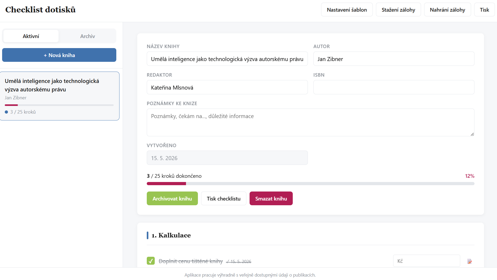

01 Právo
Mgr. práv (ZČU 2013). Devět let v advokacii. Editorka 71 odborných právních knih — zejména z oblastí: IT právo, finanční právo, právo duševního a průmyslového vlastnictví a civilní proces.
01 / 03 2013–
Legal Engineer · Kandidatura
Devět let v advokacii. Sedm let v redakci Wolters Kluwer ČR. Dva roky s AI nástroji. Vím, jak právníci pracují s informacemi. Vím, jak Wolters Kluwer vydává odborný obsah. A umím postavit nástroj, který tyhle dva světy propojuje.
71
vydaných knih
09
let v advokacii
05
advokátních kanceláří
09
let s Wolters Kluwer
pokračovat
02 — Tři světy
01 Právo
Mgr. práv (ZČU 2013). Devět let v advokacii. Editorka 71 odborných právních knih — zejména z oblastí: IT právo, finanční právo, právo duševního a průmyslového vlastnictví a civilní proces.
01 / 03 2013–
02 Jazyk
Sedm let v právní redakci Wolters Kluwer ČR jako knižní redaktorka. Dva roky externí spolupráce. Denně práce s desítkami autorů — advokáty, soudci, akademiky, in-house právníky, notáři, exekutory, mediátory. Vysvětluji jim, jak spolupráce probíhá, zaučuji je do našich online systémů (PublishOne), vyjednávám rozsah, řídím deadlines, dávám jim zpětnou vazbu k rukopisům. Když si autor čímkoli není jistý, ozývá se mně.
02 / 03 2017–2024
03 Technologie
Dva roky aktivního stavění s AI (LLM, Claude Code, prompt design) a vzdělávání se v oboru. Vlastní web. Checklisty pro redaktory. Kalkulačka služeb. Interaktivní digitální materiály. Každý měsíc nový projekt, vše veřejně dostupné. Praktický builder mindset — zaměřený na funkční prototypy, ne AI buzzwordy. I tahle stránka je vyrobená ručně s Claude Code.
03 / 03 2024–
03 — Dráha
2005 — 2013
Bc. + Mgr.
Education
2005 — 2008
Bakalář
Education · Bc.
Studium práva zaměřené na praktické stránky, zejména podnikání.
2009 — 2013
Magistr
Education · Mgr.
Pětiletý magisterský obor Právo a právní věda se standardním rozsahem přes všechny právní specializace.
2013
Semestr
Education · Exchange
Úspěšně absolvovaný semestr v angličtině v oboru Global Economy & Law Program.
2008 — 2016
9 let
Practice
2008 — 2010
Malá AK
Practice · office back, jednání s ÚPV, podávání přihlášek ochranných známek
Malá advokátní kancelář složená z advokáta, advokátní koncipientky a odborné office manažerky. Specializace na právo ochrany duševního a průmyslového vlastnictví.
2010 — 2013
Střední AK
Practice · office back, přepis podání k soudům a úřadům
Střední advokátní kancelář — 3 partneři, 3 spolupracující advokáti, 2 koncipienti, 1 právní studentka, 1 office manažerka. Generální praxe a specializace na zdravotnické právo.
2011
Krátkodobá spolupráce
Practice · office back, vydávání platebních rozkazů
Hlavní partnerka, advokátka a řada právních studentů. Specializace na vymáhání pohledávek.
2012
Krátkodobá spolupráce
Practice · office back, právní rešerše
Hlavní partner, 2 advokáti, 3 advokátní koncipienti, 2 právní studenti.
2013 — 2016
Velká AK
Practice · koncipient
Velká advokátní kancelář — 3 partneři, 5 advokátů, 3 koncipienti, 3 právní studenti, 4 administrativní pracovníci. Generální praxe, likvidátoři a insolvenční správci, trestní právo. Office back, příprava podkladů pro soudy, jednodušší případy u soudů, rešerše pro partnery, veřejné zakázky, správa 450+ datových schránek insolvenčního správce a likvidátora, vydávání platebních rozkazů apod.
2017 — 2024
7 let
Editorial
Redaktorka v právní oblasti se specializací na finanční právo, IT právo, právo duševního vlastnictví a občanské právo procesní. Zpracovávání rukopisu (kontrola po obsahové i formální stránce), komunikace s autory i externími dodavateli (jazyková korektorka, sazeč, tiskárna), administrativa související s celým procesem vydávání rukopisu. Kromě rukopisů odborných knih zpracovávám i navigátory (vizuálně technické řešení ukazující konkrétní postup právníkům v konkrétním tématu/problému).
2024 —
present
Builder
Pokračování úzké spolupráce s Wolters Kluwer ČR jako knižní redaktorka, AI-assisted prototyping, AI-assisted development, workflow prototyping with AI tools, osobní web, výukové hry, právní checklisty, kalkulačky. Každý měsíc nový projekt.
04 — AI Projekty
Vybráno pět projektů tohoto roku.
Interaktivní checklist pro redaktory sloužící k vyřízení administrativy související s objednáním dotisků.
↓ scroll pro náhled celé stránky

Interaktivní hra pro právníky ve stylu Šibenice (Viselec), ve které si mohou o přestávce na konferenci Legal Innovation Day zábavným způsobem dozvědět, jaké všechny knihy vydalo Wolters Kluwer ČR z oblasti Práva IT.
Můj osobní web katerinamlsnova.cz. Postaven díky vibe codování, statické HTML/CSS na GitHub Pages. Žádný backend, žádné cookie. Důkaz, že právník bez programátorského vzdělání s AI dotáhne produkt.
Výukové hry pro předškolní děti, díky kterým si mohou hravou formou procvičit počítání do 20, nebo cvičit paměť.
Kalkulačka, která klientovi řekne cenu interaktivním způsobem místo pasivního přijímání (nepříjemných) informací.
05 — Proč Libra
01
Sedm let jsem byla zaměstnancem právní oblasti Wolters Kluwer ČR. Nadále s WK spolupracuji, takže 9 let soustavné spolupráce. Vím, jakou cestou prochází odborný právní text od autora k čtenáři. Vím, jak vypadá ASPI zevnitř a už 9 let se podílím na zpracováním obsahu pro ASPI. V právní redakci jsem stála za vznikem samostatné oblasti Práva IT, které se věnuji od samého počátku.
02
Pracovala jsem jako právník na nejrůznějších pozicích, v nejrůznějších advokátních kancelářích devět let. Vím, jakým způsobem právníci s informacemi nakládají a co potřebují pro efektivní práci.
03
Můj zájem o technologie není důsledek moderního mainstreamového proudu. Byla jsem jedna z prvních v ČR s Kindle čtečkou od Amazonu. Zařízení pro chytrou domácnost Google Home jsem musela kupovat přes adresy v Británii a Německu, protože v ČR nebyly dostupné, ale já je chtěla vyzkoušet. Testovala jsem pro O2 první typ chytrých hodinek. Když přišly první LLM, hned jsem se pustila do školení a začala vibe codovat.
O mně

Mgr. práv (ZČU), 9 let v advokacii, 7 let knižní redaktorka v právní oblasti Wolters Kluwer ČR. Specializace: IT právo, finanční právo, právo ochrany duševního vlastnictví a průmyslových práv, civilní proces. V redakci jsem stála za vznikem samostatné oblasti práva IT.
Od roku 2024 jsem OSVČ — pokračující spolupráce s WK a vlastní AI projekty (vibe coding, prompt design, právní nástroje). Práce knižní redaktorky pro Wolters Kluwer ČR znamená denně kontrolovat aktuálnost právních textů, komunikovat s praktikujícími advokáty, soudci a ostatními právnickými profesemi a neustále sledovat legislativu a chystané změny.
Z práva jsem neodešla, jen jsem ho začala dělat jinak. Proto jsem vhodná na pozici Legal Engineer ve Wolters Kluwer Libra.
A · Specializace
V roce 2018 dostalo Wolters Kluwer ČR nabídku na rukopis Programování pro právníky (Lukáš Michna) — o zpracování jsem se aktivně přihlásila a začala v právní redakci budovat samostatnou specializaci Právo IT. V rámci ní jsem vydala tyto knihy:
B · Souhrn
71
odborných knih napříč specializacemi, které jsem v právní redakci Wolters Kluwer ČR zpracovala — všechny jsou součástí ASPI.
06 — Reference
…rád bych také já výslovně poděkoval Vám i jazykové korektorce za odvedenou práci (třebaže kolega Rak již, zcela správně, poděkoval za oba). Po Vašich úpravách si už umím docela dobře představit, jak bude kniha reálně vypadat, a jsem s tou představou velmi spokojen (víc, než jsem čekal).
Mimořádná spokojenost s pí. Mlsnovou, velice lehká spolupráce, odpovídá okamžitě a vždy se snaží hodně pomoct. Někdy si až připadám blbě, že ji zatěžuju hloupými dotazy, ale evidentně je to velice tolerantní osoba :).
Skvělé, děkuji Vám moc, jste skutečně velmi efektivní. Budu se těšit a snad se brzy ozvu s tou monografií.
Paní Mlsnová je skvělá, spolupráce s ní nemůže být lepší. Děkuji, Gazda